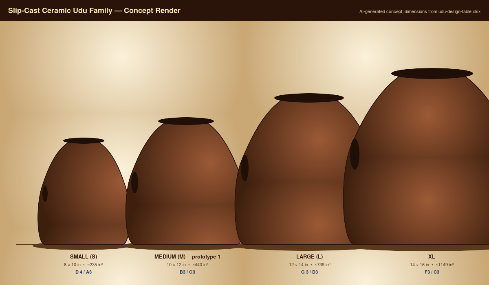

What this is
Build a slip-cast ceramic udu family — Small / Medium / Large / XL — with repeatable chamber volumes and two playable Helmholtz tones: the main mouth tone and the side-hole slap tone. The first production target is the **Medium** standard udu (UDU-P2: 10 in × 12 in body, B3 mouth / G3 side), followed by a scaled family. The udu (Igbo: *ụdụ*, "vessel") is a Nigerian clay-vessel drum and the documentation here treats that lineage as fact, not marketing.
The repository is the engineering artifact for the dual-Helmholtz coupled- resonator model: parametric design table → 3D-printed master halves → two-piece plaster mold → Cone-6 stoneware slip-cast → bisque + tune + glaze. The same pipeline serves `ocarina/`, `gemshorn/`, and `transverse-flute/`.
The design
The udu uses a shared chamber with two coupled Helmholtz resonators:
```text f_top = c/(2*pi) * sqrt( A_top / (V * L_top) ) f_side = c/(2*pi) * sqrt( A_side / (V * L_side) ) L = wall_thickness + 0.6 * sqrt(A/pi) V = (pi/6) * body_diam^2 * body_height * shape_factor ```
When both ports are open and the player's hands move, the modes couple — the single-port formulas are useful first-order targets, and the placeholder coupled-mode eigenvalue model lives in `wolfram-starter.wl`. Measured prototypes define the final tuning corrections; per-family corrections feed back through `scripts/record_measurement.py` (see `references/empirical-learning-loop.md`).
The build
Udu Drum Family Assembly Manual
Scope
This manual covers slip-cast ceramic udu prototypes based on `docs/Udu.xlsx`, starting with the medium standard udu and expanding to a scaled family.
Tools
- CAD package for body profile and mold split.
- Large-format 3D printer or outsourced print for master halves.
- Plaster mold-making setup: cottle boards, scale, bucket, plaster, mold soap, clamps.
- Cone 6 stoneware casting slip.
- Hole cutters, ribs, sponges, fettling knife, rasp, and small files.
- Calipers, wall-thickness gauge if available, graduated water-fill vessel, tuner/microphone.
- Kiln access, wax resist, exterior glaze.
- Optional: rubber feet, stand prototype, piezo/contact mic.
Process
1. **Choose size** - Start with the medium workbook design unless testing mold workflow at smaller scale. - Assign build ID and expected shrinkage.
2. **CAD body and mold strategy** - Model the target fired body first. - Add shrinkage scale to produce the master body. - Choose a split line that releases cleanly and avoids hand-contact ridges.
3. **Print and seal master** - Print master halves rigid enough for plaster. - Sand high layer lines, fill defects, and seal. - Verify master diameter and height before molding.
4. **Make plaster mold** - Apply release. - Pour mold halves with registration keys. - Dry completely before first casting. - Record mold dry weight and first-use date.
5. **Slip cast** - Fill mold with slip. - Drain after target wall thickness buildup. - Record fill time, drain time, slip batch, room condition, and demold time.
6. **Leather-hard work** - Clean seam. - Cut side hole undersized or at first target. - Round mouth and side-hole edges. - Add foot/stand features only if they do not trap drying stress.
7. **Dry** - Dry under plastic for even moisture. - Rotate periodically if needed. - Inspect rim, side hole, foot, and seam.
8. **Bisque fire** - Fire to the clay body's bisque schedule. - Measure dimensions, chamber volume, mass, and pitch.
9. **Tune** - Tune with small changes and document each pass. - For simple open-port Helmholtz behavior, larger port area usually raises resonance; hand-covered playing conditions should be measured separately. - Do not remove more material until the measurement setup is repeatable.
10. **Glaze** - Glaze exterior only unless intentionally testing interior glaze damping. - Keep mouth and side-hole edges clean.
11. **Final validation** - Measure final tones, shell tap, weight, stability, and ergonomics. - Record whether feet or stands damp the ceramic tap tone.
Failure Modes To Watch
- Cracks at side hole: hole cut too late, edge too sharp, or drying too fast.
- Dead bass response: chamber too small, ports poorly proportioned, walls too thick, or hand seal poor.
- Uncomfortable slap edge: rim needs larger radius or smoother fired edge.
- Warped base: unsupported drying or uneven mold thickness.
- Over-damped shell: glaze too heavy, feet too soft, or wall too thick.

The numbers
BOM
| item_id | category | item | qty | spec | make_buy | estimated_cost | source_note | drawing_ref | notes |
|---|---|---|---|---|---|---|---|---|---|
| UDU-BOM-001 | Clay | Cone 6 casting slip | 5 gal | Commercial premixed stoneware casting slip | Buy | $35-50 | Workbook estimate not date-checked | UDU-DRW-003 | Enough for roughly 8-12 medium udus per workbook note. |
| UDU-BOM-002 | Mold | #1 pottery plaster | 50 lb | Pottery plaster for 2-piece mold | Buy | $25-35 | Workbook estimate not date-checked | UDU-DRW-002 | Record plaster ratio and mold dry weight. |
| UDU-BOM-003 | Master | 3D printed master | 2 halves | PLA master scaled for shrinkage | Make | $5-15 | Workbook estimate not date-checked | UDU-DRW-001 | Sand and seal before mold making. |
| UDU-BOM-004 | Mold | Mold soap/release | 1 bottle | Plaster-compatible release | Buy | $8-12 | Workbook estimate not date-checked | UDU-DRW-002 | Use on sealed master and plaster parting faces. |
| UDU-BOM-005 | Cutting | Hole cutter set | 1 set | 1.5 in to 3 in round cutters | Buy | $10-20 | Workbook estimate not date-checked | UDU-DRW-004 | Cut side hole at leather-hard stage. |
| UDU-BOM-006 | Firing | Bisque and glaze firing | 2 fires | Cone 06 bisque and Cone 6 glaze | Buy | $20-50/fire | Workbook estimate not date-checked | UDU-VAL-002 | Record schedule and kiln. |
| UDU-BOM-007 | Finish | Exterior glaze | 1 pint | Cone 6 matte or satin glaze | Buy | $10-20 | Workbook estimate not date-checked | UDU-DRW-005 | Leave interior unglazed. |
| UDU-BOM-008 | Hardware | Rubber feet | 1 set | Three low-profile feet | Buy | $3-5 | Workbook estimate not date-checked | UDU-DRW-006 | Optional; test effect on shell resonance. |
| UDU-BOM-009 | Electronics | Contact pickup | 1 | Piezo disc/contact mic | Buy | $15-30 | Workbook estimate not date-checked | UDU-DRW-007 | Optional electric variant. |
| UDU-BOM-010 | Measurement | Water-fill and frequency measurement kit | 1 | Graduated vessel plus tuner/mic | Buy | TBD | Add supplier/date before purchase | UDU-VAL-003 | Required for empirical correction loop. |
Cut list
| cut_id | part | qty | rough_dimensions_in | final_dimensions_in | material | orientation | operation | tolerance_in | yield_or_offcut | notes |
|---|---|---|---|---|---|---|---|---|---|---|
| UDU-CUT-001 | Master body upper half (3D-printed) — Medium | 1 | 12 x 12 x 7 envelope | master scaled by 1/(1-shrinkage); ~1.136x at 12% shrinkage | PLA or sealable resin | Z up; mark mouth axis + side-hole datum | Print in 2-3 sessions; sand layer lines; fill voids; seal | +/-0.020 | Reuse offcut sprues for shrinkage coupons | Master scale factor must be re-derived from MEASURED clay shrinkage before final master. |
| UDU-CUT-002 | Master body lower half (3D-printed) — Medium | 1 | 12 x 12 x 7 envelope | mirror of UDU-CUT-001 | PLA or sealable resin | Z up; mark split-line datum | Print sand fill seal | +/-0.020 | Reuse offcut sprues | Same scale factor as UDU-CUT-001. |
| UDU-CUT-003 | Wooden cottle boards (mold making) | 4 | 18 x 16 x 0.75 each | 16 x 14 x 0.75 each | Melamine-faced MDF | Smooth face inward; mark inner clamping zone | Cut edge-seal drill clamping holes | +/-0.030 | One sheet of 4ft x 8ft x 0.75 yields all 4 plus 50% of next mold set | Clean parting wax/release before each pour. |
| UDU-CUT-004 | Plaster mother mold half (poured) — Medium | 2 | 16 x 14 x 4 each | 16 x 14 x 3.5-3.75 each (around master) | USG #1 pottery plaster (or equiv.) | Pour with master keyed to first half; second half over registration | Mix to 73:100 water:plaster (by weight); 2-min slake; pour around sealed master | +/-0.10 | Trim spew/edge after demold; recover small offcuts as test slabs | Min 1.50 in plaster around master; 2.0 in preferred for medium-size pour stiffness. |
| UDU-CUT-005 | Greenware vessel (slip-cast) — Medium | 1 per pour | master cavity wet (~12 x 14 x 7 OD) | ~10.6 x 12.4 x 6.2 fired (12% shrink) | Cone 6 stoneware casting slip | Mouth axis along master split | Slip pour > drain at target wall (~0.30 in / 7.6 mm) > demold leather-hard | N/A (process-controlled) | Reuse demold trim/fettling waste as slip recycle | Wall thickness drives drying time and tap tone — measure on noncritical trim. |
| UDU-CUT-006 | Mouth opening (cast as part of master) | 1 | N/A | 3.0 in dia FIRED (=3.41 in master) | Cone 6 greenware | Top of body — central | Cast cleanly via mold shape; rim-round at leather-hard | +/-0.030 | N/A | Round rim radius for repeated hand-seal comfort. |
| UDU-CUT-007 | Side hole (leather-hard cut) | 1 per body | N/A | 2.0 in dia FIRED | Cone 6 greenware | Side of body at hand-comfort height | Brass tube cutter or hole punch at leather-hard; clean burr with damp finger | +/-0.030 (start) | N/A | Cut undersized; final tune at bisque if pitch off >50 cents. |
| UDU-CUT-008 | Foot pads (optional — cast-in or applied) | 3 per body | N/A | ~0.5 in dia x 0.10 in tall | Rubber adhesive feet OR cast-in clay foot | Tripod 120 deg around base | Apply post-glaze fire OR cast as part of master | +/-0.030 | N/A | Test with and without feet; feet damp shell tap tone (acoustic trade-off). |
| UDU-CUT-009 | Post-bisque tuning trim | as needed | N/A | Within +/-50 cents of target frequency per validation.csv | Bisqued ceramic | N/A | Diamond burr in steps; enlarge mouth or side hole to raise pitch | +/-0.020 dimensional; +/-50 cents acoustic | N/A | Document each enlarge step on validation row. Hand coupling shifts perceived pitch — measure both with and without hand seal. |
| UDU-CUT-010 | Wax resist mask (pre-glaze) | 1 application | N/A | ~0.020 in dry film over mouth rim + side hole edge + interior | Brushable wax resist | N/A | Brush-apply; dry per supplier; check all openings clear | Visual | N/A | Mask edges where hand contact happens to keep glaze surface clean. |
| UDU-CUT-011 | Glaze application (exterior only) | 1 application | N/A | ~0.010-0.020 in per coat; 1 coat exterior matte | Cone 6 satin or matte glaze | Avoid waxed regions and mouth/side-hole interiors | Dip / brush / spray exterior only | +/-0.010 (visual) | N/A | Heavy glaze damps shell tap. Keep coat thin. |
| UDU-CUT-012 | Family scaling — Small / Large / XL master variants | 1 set each | Per design table family-spec rows | Per design table fired dimensions | Same as UDU-CUT-001/002 | Per family | Print/master/mold parallel pipeline once Medium voicing is stable | +/-0.025 | Each size needs its own cottle set | Defer until UDU-P2 medium prototype validates wall thickness + mouth/side ratio. |
Tuning & validation
| build_id | stage | date | model | clay_body | shrinkage_expected_pct | master_scale_factor | body_diam_in | body_height_in | wall_thickness_in | chamber_volume_in3 | mouth_diam_in | side_hole_diam_in | condition | target_note | target_freq_hz | measured_freq_hz | cents_error | action | result | notes |
|---|---|---|---|---|---|---|---|---|---|---|---|---|---|---|---|---|---|---|---|---|
| UDU-P1 | greenware | Small | 8 | 10 | TBD | TBD | 3 | 2 | mouth_open | D#4 | 311 | First slip-cast body check. | ||||||||
| UDU-P1 | bisque | Small | TBD | TBD | TBD | TBD | TBD | TBD | mouth_open | D#4 | 311 | Measure after shrinkage. | ||||||||
| UDU-P1 | bisque | Small | TBD | TBD | TBD | TBD | TBD | TBD | side_open | A3 | 223 | Check hand slap response. | ||||||||
| UDU-P2 | greenware | Medium | 10 | 12 | 0.3 | 440 | 3 | 2 | mouth_open | B3 | 249 | Workbook standard target. | ||||||||
| UDU-P2 | bisque | Medium | TBD | TBD | TBD | TBD | TBD | TBD | mouth_open | B3 | 249 | Primary tuning checkpoint. | ||||||||
| UDU-P2 | bisque | Medium | TBD | TBD | TBD | TBD | TBD | TBD | side_open | G3 | 192 | Record whether perceived pitch matches formula. | ||||||||
| UDU-P2 | glaze_fire | Medium | TBD | TBD | TBD | TBD | TBD | TBD | mouth_open | B3 | 249 | Measure glaze shift. | ||||||||
| UDU-P3 | bisque | Water udu | TBD | TBD | TBD | TBD | TBD | TBD | tilt_sweep | TBD | TBD | Record water amount and sweep range. |
Known risks
Udu Drum Family — Risk Register
> Red-team pass on the slip-cast ceramic udu family (UDU-S/M/L/XL). Every risk > below has a verifiable test attached. High-severity risks are flagged for > Tony's decision before we commit material.
This document is the v4 obligation produced by the `red-team` specialist; the verifier asks "is this packet internally consistent?" while red-team asks "is this design actually safe to build?" The two are independent — a polished self-consistent packet can still fail at the bench.
Categories enumerated below: **Acoustic**, **Structural**, **Ergonomic**, **Supply**, **Fit/Finish**.
---
Acoustic
[Acoustic] Predicted frequencies diverge from workbook targets at family extremes — HIGH
**Symptom:** UDU-S mouth tone reads ~340 Hz vs D♯4 target 311 Hz (+157 ¢ sharp); UDU-XL mouth tone reads ~154 Hz vs F3 target 175 Hz (-220 ¢ flat). Family targets at the extremes are out of reach of bisque-stage trim alone (the trim band is roughly ±100 ¢ before the port becomes structurally compromised or visually disproportionate).
**Mechanism:** The workbook used identical port diameters (mouth 3 in, side 2 in) and a fixed shape factor 0.70 across the family. Helmholtz frequency scales as √(A / (V · L)), so holding A constant while V scales linearly makes the predicted pitch scale as V^(-1/2). The targets were chosen on a musical interval ladder (mouth tones D♯4 / B3 / G♯3 / F3 — descending major 3rd / minor 3rd / minor 3rd) but the *acoustic* scaling of the chosen geometry doesn't match the *musical* scaling of the targets.
**Test:** Cast a one-off small body (UDU-P1) and measure the mouth tone with a tuner before the family molds are committed. Cents error >100 on the smallest member confirms the family-level mismatch.
**Mitigation:** - Drop the UDU-S mouth diameter to ≈2.5 in (shrinks predicted Hz back toward 310 Hz) and grow the UDU-XL mouth toward ≈3.5–4.0 in (grows predicted Hz back toward 175 Hz). - *Or* keep ports constant and shift the family targets onto an acoustically-honest ladder (e.g., mouth tones at fixed volume ratios). - Document whichever path is chosen in `family-spec.csv` and re-emit the per-member SVG drawings.
**Severity:** **High** — design change required, not just a manufacturing adjustment. Escalated to Tony for decision before Tier-3 production CAD.
---
[Acoustic] Coupled-mode pitch when both ports are partly open is not predicted — Medium
**Symptom:** A real udu's musical character is the *sweep* between the mouth and side tones as the player covers/uncovers each port. Single-port formulas (used in the design table and Wolfram starter) do not predict the coupled-mode pitch or the transition curve.
**Mechanism:** Two ports sharing a chamber form a 2-DOF Helmholtz system with eigenmodes at frequencies that are not the simple geometric mean of the single-port frequencies. The coupling strength depends on port-area ratio and player hand impedance.
**Test:** Build UDU-P2 (Medium), record audio at five hand conditions (mouth fully open / 25% / 50% / 75% / fully closed against a rigid hand seal, side hole open in each), spectrogram analysis of fundamental frequency vs hand condition. Compare to the placeholder coupled-mode eigenvalue model in `wolfram-starter.wl`.
**Mitigation:** Empirically calibrate the coupling term in `wolfram-starter.wl` from the UDU-P2 measurements; record the calibrated coupling coefficient in the per-family corrections database via `scripts/record_measurement.py`.
**Severity:** Medium — affects predictive fidelity, not the build. Required before declaring the physics model "validated."
---
[Acoustic] Glaze fire shifts measured pitch — Medium
**Symptom:** A bisque-tuned udu plays sharp/flat after glaze fire. Pitch shift typically 5–25 ¢ depending on glaze thickness and exterior coverage.
**Mechanism:** Glaze adds wall mass (lowers shell-resonance damping slightly) and can subtly change the interior surface impedance at high frequencies. The Helmholtz fundamental itself is dominated by chamber volume × port area, but glaze film thickness can effectively reduce chamber volume by 1–3% on a 1/2" wall vessel.
**Test:** Record mouth + side tones for UDU-P2 at three stages: greenware, bisque, glaze-fire. Log all three rows in `validation.csv` with environment (temp / RH).
**Mitigation:** Cut ports slightly under-target at leather-hard; final-tune at bisque if needed; commit to glaze fire only when bisque tones are within ±25 ¢ of target. Glaze interior is forbidden (already called out in build).
**Severity:** Medium — process-controllable, not a design defect.
---
Structural
[Structural] Wall thickness margin at side-hole edge — Medium
**Symptom:** The side hole is cut at leather-hard and then enlarged at bisque for tuning. Each enlargement step removes wall material around the port. Repeated tuning cycles can leave the rim too thin (<1/8") for hand-slap durability.
**Mechanism:** Hand slap on the port edge produces local stress ~10–20× the static body load. A 1/8" minimum wall is the rule for Cone-6 stoneware in domestic-use vessels; below that the slap-edge chips on first impact.
**Test:** Slap-test a UDU-P0 port-tile with measured edge thicknesses (0.30, 0.20, 0.15, 0.10 in). Document the thickness at which the rim chips after 100 slaps with a moderate hand.
**Mitigation:** Limit total tuning enlargement to ≤30% of original port area. Build a tuning trim *budget* into `validation.csv`: if predicted cents-error >100 ¢, flag the body for rebuild rather than over-trim. Round all port edges with a damp finger / soft rib before bisque.
**Severity:** Medium — manufacturing-controllable. Becomes High on UDU-XL where extreme cents-error correction is implied (see Acoustic risk #1).
---
[Structural] Greenware crack risk on long unsupported wall — Medium
**Symptom:** UDU-XL's 14" diameter × 16" tall body has a 6"+ unsupported wall span between mouth and base after demold. Greenware shrinkage during drying produces hoop stress; cracks initiate at the side-hole notch and propagate vertically.
**Mechanism:** Differential drying — interior surface dries more slowly than exterior — produces a stress gradient. Side-hole cut creates a stress concentrator. Stoneware tensile strength at 18–22% moisture content is ~50 PSI; predicted hoop stress at the crack location is ~30–40 PSI for the XL geometry.
**Test:** First UDU-XL casting carries a strain gauge or dot-grid on the exterior wall; photograph at 24-hour intervals during drying; inspect side-hole crater for crack initiation. Repeat the same protocol on UDU-L as a sanity check.
**Mitigation:** Slow-dry under plastic sheet for 5–7 days; cut side hole *after* initial drying, not at leather-hard. If cracks appear in the first XL, increase wall thickness to 0.40 in for that size only and re-emit XL drawings.
**Severity:** Medium for UDU-S/M/L (geometry is well-supported), High for UDU-XL specifically — escalated.
---
Ergonomic
[Ergonomic] Side-hole height for seated player — Low
**Symptom:** Player seated on a low stool reaches across an UDU-XL 14" diameter body to slap the side hole; reach distance ~12" puts the slap stroke off the player's natural arc.
**Mechanism:** Standing or kneeling play accommodates the larger bodies; seated play (most common for solo recording) constrains the side-hole height to the 9th–10th-percentile player's natural arm-arc. For UDU-S/M the side hole at 5–6" height clears this; UDU-L/XL push the side hole to 7–8" which is the upper edge of the comfort band.
**Test:** Mock up the UDU-XL profile in foam core; place on a 14" stand and have three players (5th-, 50th-, 95th-percentile arm reach) play the side hole for 60 seconds; rate comfort 1–5.
**Mitigation:** Document recommended playing position per size in `assembly-manual.md`. UDU-XL is concert-bass with a stand; specify the stand height so the side hole sits at the seated player's elbow.
**Severity:** Low — not a build defect; a documentation obligation.
---
[Ergonomic] Mouth rim sharpness on hand seal — Medium
**Symptom:** Player seals the mouth with a flat hand strike. A sharp or undercut rim cuts the palm during repeated play; even a slightly acute angle causes redness on the heel of the palm after 10 minutes of continuous play.
**Mechanism:** Hand seal needs full-area contact with no high points. The fired rim profile depends on the master geometry, demold cleanup, and any leather-hard finger-rolling. A clean radius ≥1/8" on the rim is the comfort minimum.
**Test:** UDU-P0 cup tile carries three rim radius variants (1/16", 1/8", 1/4"). 5-minute continuous play at each; player rates comfort + check for skin redness.
**Mitigation:** Specify rim radius ≥1/8" in the master CAD. Roll the rim with a damp finger / soft rib at leather-hard before bisque. Reject any body where the rim radius reads <1/16" after demold.
**Severity:** Medium — affects long play sessions. Easy to fix at the master geometry, hard to fix after firing.
---
Supply
[Supply] Cone-6 casting slip shrinkage variance — Medium
**Symptom:** Two batches of "Cone 6 stoneware casting slip" from the same supplier shrink 11.5% and 13.0% respectively. Master scale factor 1/(1 - shrinkage) shifts by ~1.5% (from 1.130 to 1.149), enough to push a tuned body 30–40 ¢ off target.
**Mechanism:** Shrinkage is a function of clay particle size, water content, organic content, and firing schedule. Manufacturers specify a *nominal* shrinkage; actual shrinkage is batch-dependent and the spec is rarely tighter than ±1.5%.
**Test:** Pour three shrinkage coupons (4" × 1" × 0.25" bars) per new slip batch; bisque-fire all three; measure shrinkage; record in `validation.csv` shrinkage column.
**Mitigation:** **Re-derive** the master scale factor from the *measured* batch shrinkage before printing each new master, not from the workbook's 12% assumption. The OpenSCAD master takes shrinkage as a parameter; this is already wired in, but the procedure must be called out in the assembly manual.
**Severity:** Medium — process-controllable. Skipping the coupon test is the failure mode, not the slip itself.
---
[Supply] Bambu X1C build envelope vs UDU-L/XL master — High
**Symptom:** Bambu X1C build volume is ~256 × 256 × 256 mm (~10" cube). UDU-L master half is 12" tall × 12" wide × 6" deep at 12% shrinkage scaling — exceeds the print bed in two dimensions. UDU-XL is worse.
**Mechanism:** Master halves print as one-shot solids for surface finish; splitting them adds layer-line discontinuities that telegraph into the plaster mold and ultimately the cast surface.
**Test:** Open the UDU-L master.scad output in OpenSCAD, export STL sliced as a half, load in BambuStudio — confirm "out of build volume" warning before printing.
**Mitigation:** Three options: 1. **Multi-section masters** — split each L/XL master into 2–3 stackable sections, glue and surface-fill at the joint, sand smooth before plaster pour. 2. **Outsource print** — Shapeways, Craftcloud, or local Maker Nexus bay with a larger printer (Prusa XL, Voron 350+ build, 600 mm format). 3. **Defer L/XL until the print farm grows** — UDU-S and UDU-M fit the X1C; ship those first. (Already explicitly called out in the README "Status" table.)
**Severity:** **High** for UDU-L/XL — design constraint that must be resolved before Tier-3 CAD. Escalated to Tony.
---
Fit / Finish
[Fit/Finish] Glaze adhesion at port edge — Low
**Symptom:** Wax resist at the mouth and side-hole rim is meant to keep the rim glaze-free for hand contact. A thin or uneven wax application lets glaze creep onto the rim during dipping; the rim glaze then chips off in service or feels gritty under the hand.
**Mechanism:** Wax resist relies on the contact angle between liquid glaze and a hydrophobic film. Low-temperature wax (<140 °F drip point) re-wets if the bisque body is warm from a kiln just opened. Brush strokes leave thin spots.
**Test:** Wax-resist a bisque coupon along a pencil-marked line; dip-glaze; bisque-fire; inspect line edge under raking light for glaze creep.
**Mitigation:** Wax under cool conditions (≤80 °F). Two thin coats beat one thick coat. Inspect each rim before glaze fire; touch up wax gaps. Specify the wax type in `bom.csv` (currently "wax resist" — too generic).
**Severity:** Low — easy to catch at QC, affects play comfort if missed.
---
[Fit/Finish] Master split-line transfer to cast body — Medium
**Symptom:** The two-piece plaster mold has a parting seam where the mold halves meet. Casting transfers a fine ridge along this seam onto the greenware body. If the seam runs through the hand-contact zone, the player feels a subtle bump on each strike.
**Mechanism:** The mold split is geometrically necessary for demold; no slip-cast body avoids it. The skill is to *route* the split line away from hand-contact surfaces.
**Test:** Trace the proposed split line on the master CAD; overlay the hand-contact heat-map (mouth seal palm + side-hole slap fingers). Any overlap is a design issue; relocate the split line.
**Mitigation:** Position split line on the front-back equator of the body, not on the side-hole face. Trim split-line ridge with a damp fettling tool at leather-hard; final smooth before bisque.
**Severity:** Medium — design + process. Already addressed in the mold strategy of `design.md`; this risk register documents the *why*.
---
Cross-cutting / lineage
[Cultural] Public-facing copy must respect Igbo lineage — High (procedural)
**Symptom:** Listing the udu in a recruiter-facing portfolio without the lineage attribution reads as appropriative or naïve. The udu is not a generic ceramic bass pot.
**Mechanism:** Documentation is a public artifact even when the build is private. Recruiters, students, and other makers will read the README and the build-log site without context.
**Test:** Pre-publication review by a knowledgeable second reader (family member, cultural-sensitivity reader, or peer maker familiar with West African instrument lineage). Sign-off recorded in `notes/` before the build-log site goes live.
**Mitigation:** The README, `design.md`, and the build-log site each carry an explicit attribution paragraph. The license clause (CC-BY 4.0) is for the *engineering documentation*, not for the instrument concept itself. Already captured in the LICENSE file and design.md "Cultural And Product Note" — this risk register documents the *requirement*, not a defect.
**Severity:** High (procedural — block publication of build-log site until pre-pub review is signed).
---
Risk summary
| ID | Category | Severity | Status | |---|---|---|---| | ACO-01 | Acoustic — family-extremes target mismatch | High | Escalated | | ACO-02 | Acoustic — coupled-mode unmodeled | Medium | Empirical loop | | ACO-03 | Acoustic — glaze-fire pitch shift | Medium | Process | | STR-01 | Structural — port-edge wall margin | Medium | Process | | STR-02 | Structural — XL greenware crack | Medium / High XL | Escalated for XL | | ERG-01 | Ergonomic — side-hole reach | Low | Documentation | | ERG-02 | Ergonomic — mouth rim sharpness | Medium | Master-CAD | | SUP-01 | Supply — slip shrinkage variance | Medium | Process | | SUP-02 | Supply — Bambu envelope vs L/XL | High | Escalated | | FIT-01 | Fit/Finish — glaze creep at port edge | Low | QC | | FIT-02 | Fit/Finish — split-line transfer | Medium | Master-CAD | | CUL-01 | Cultural — lineage attribution | High procedural | Pre-pub review |
**High-severity, escalated to human:** ACO-01 (family-extremes target mismatch), STR-02 (XL crack risk), SUP-02 (Bambu envelope), CUL-01 (pre-pub review).
These four block declaring the v4.1 udu packet "production-tagged" until Tony resolves them.